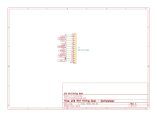

Sheet 1
The 500-series interface
A 500-series module is a card that plugs into a rack. The rack supplies power and carries audio in and out on a single 15-pin edge connector.

What the rack gives you
Everything arrives on one card-edge connector: a 15-pin EDAC at 0.156″ pitch. There is no separate power lead and no separate audio lead — slide the card in and it is connected. That is the whole appeal of the format.
The rack provides ±16 V and a ground. It expects the module to present a balanced input and drive a balanced output. It does not provide a regulated low voltage, so anything else the module needs it has to make for itself.
Pin by pin
| Pin | Standard function | Used here for | Notes |
|---|---|---|---|
| 1 | Chassis ground | Chassis / shield | Tied to audio ground through a 100 Ω + 10 nF network |
| 2 | Output + (+4) | Main output, hot | Driven through a 100 Ω build-out resistor |
| 3 | Output + (−2) | Aux output, hot | Chassis-specific — buffered duplicate of the main output |
| 4 | Output − | Main output, cold | Driven in antiphase, also through 100 Ω |
| 5 | Audio ground | Audio ground (AGND) | The module's star ground |
| 6 | 525 stereo link | Stereo link | Ties two modules' detectors together |
| 7 | Input − (−2) | Aux output, cold | Chassis-specific |
| 8 | Input − (+4) | Main input, cold | |
| 9 | Input + (−2) | Aux input, cold | Chassis-specific — external key input |
| 10 | Input + (+4) | Main input, hot | |
| 11 | Gain trim resistor | Aux input, hot | Not standard. See the warning below |
| 12 | +16 V | +16 V | Through a 10 Ω series resistor into the module |
| 13 | PSU ground | PSU ground (PGND) | Joined to AGND at exactly one point |
| 14 | −16 V | −16 V | Through a 10 Ω series resistor |
| 15 | +48 V | not connected | Phantom power has no use on a line-level compressor |
Pin 11 is not standards-clean
The API 500 specification assigns pin 11 to a gain trim resistor node, not to audio. This module uses it as the hot side of an auxiliary input. That is fine in the chassis it was designed for, but it means the Aux section is not portable to an arbitrary 500 rack. The Aux circuitry is kept as a separable block for exactly this reason — leave it unpopulated and the module is fully standard.
Why balanced?
A balanced connection sends the signal twice: once normally on the hot pin, once inverted on the cold pin. Any interference the cable picks up along the way lands on both wires equally. At the far end the receiver subtracts one from the other, so the wanted signal (which is opposite on the two wires) adds, while the interference (which is identical on both) cancels. That cancellation is called common-mode rejection, and it is why professional audio runs balanced over long cables.
How well it works depends on how accurately the receiver subtracts — which comes down to resistor matching, covered on the next page.
Grounding
Three grounds arrive at this connector and they are not the same thing:
- Audio ground (pin 5) is the reference every signal voltage is measured against.
- PSU ground (pin 13) is the return path for supply current, which is noisy.
- Chassis ground (pin 1) is metalwork and shielding.
They are joined at exactly one point on the module — a single 0 Ω link,
R48, on the power sheet. Joining them at more than one point creates a loop that
supply current can flow around, and any voltage that loop develops appears in series with your
audio. This is the classic cause of hum in otherwise-correct equipment.